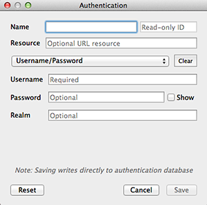

Autentication System Technical Overview¶

QgsAuthManager[src/core/auth/qgsauthmanager.h]- Singleton that oversees all master password and auth database functions and marshalling of auth methods
- Instantiates in
QgsApplication::initQgis()and cleans up inQgsApplication::exitQgis()
QgsAuthCrypto[src/core/auth/qgsauthcrypto.h]- Simple interface for hashing/verifying master password and encrypt/decrypt operations on auth configs with master password.
- Currently uses Qt Cryptographic Architecture (QCA), though originally designed for CryptoPP, which was found to be way too finicky to build on Windows, especially for non-devs.
QgsAuthMethodConfig*[src/core/auth/qgsauthmethodconfig.h]- Class representing auth method configs
- Has public properties that can generally be queried without requiring the user to input the master password
- Has sensitive properties that become semi-public once the master password is set/verified and the config has been retrieved and decrypted from the auth database by the auth manager
- Has sensitive properties that can be set and then encrypted and stored in the auth database by the auth manager
QgsAuthMethod[src/core/auth/qgsauthmethod.h] andQgsAuthMethodEdit- Class and edit widget that comprise an auth config method plugin
- Each method accepts marshaled calls from the auth manager to update
authentication-specific objects when needed, e.g.
QNetworkRequestandDataSourceURI, during resource connections - Each method has an in-memory cache of authentication objects, generated during the processing of an auth config, that are stored upon first access/load of the config. Subsequent calls use the cached resource, e.g. generated SSL certificate, key and CA chain objects.
QgsAuthMethodRegistry[src/core/auth/qgsauthmethodregistry.h] andQgsAuthMethodMetadata- Singleton plugin registry modeled after
QgsProviderRegistry - Loads plugins with
lib*authmethod.(so|dll)name pattern
- Singleton plugin registry modeled after
QgsAuthConfigEdit[src/gui/auth/qgsauthconfigedit.h]- An embeddable or standalone widget for creating/editing auth configs directly in the auth database
- Depending upon method, does lightweight validation, e.g. cert issue dates
Standalone config creation

Standalone with existing config in edit mode
This Page
About Boundless
Boundless provides commercial open source software for internet mapping and geospatial application development. We are dedicated to the growth and support of open source software.
License
This work is licensed under a Creative Commons Attribution-Share Alike 3.0 United States License. Feel free to use this material, but we ask that you please retain the Boundless branding, logos and style.